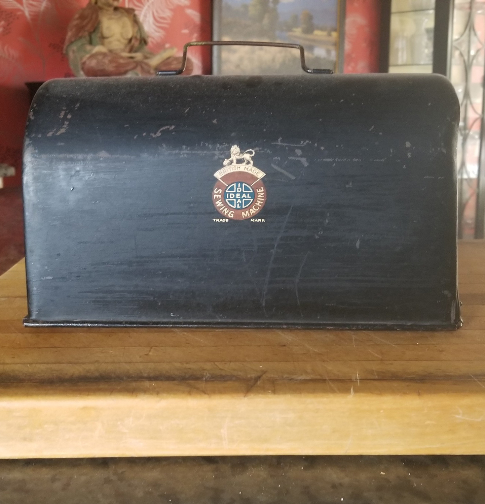
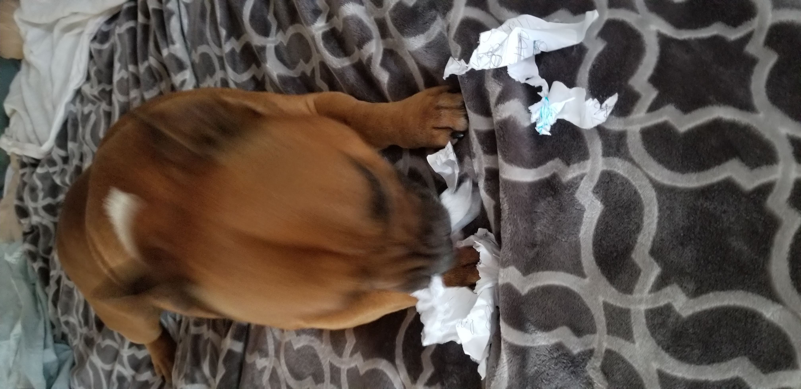

Seeking the most up-to-date advise from the Interplanetary Travelers Group International, Dilstar7 explores the airspace approximately 3 feet in front of her eyes to perceive their potential prescence. Interplanetary travel advisors automatically appear
about 3 feet in front of the retinal plane of any intelligent life form actively contemplating interplanetary travel. If travel contemplated is inter-solar, a separate set of advisors is available at a distance of approximately 20 feet in front of the retinal
plane. Dilstar7 is clearly seeking the presence of "interplanetary" advisors as evidenced by the "wide-open" posture of her eyes. Intelligent beings focusing 20 feet ahead of the retinal plane have a far more relaxed expression that can be described as "soft-eyed," or even "squinty-eyed" as they relax and focus on objects not directly before them.

Why do we say, "The Sewing Machine?"
Many fans of this blog and those persuing sources of data and narrative on the "Dilstar7-Phenom" wonder why the language "The Sewing Machine" so frequently appears in documents, Dilstar7 spreadsheets, archives and paranormal accounts related to her mysterious origins story. The language "The Sewing Machine", which most recently appeared in dialog and oral accounts cited in the current Amazon best-selling bibliography The Unauthorized Dilstar7 History, is actually the code name of her "Ideal" interplanetary traveling companion, Sunny-Betty (aka "Dinky-Doodle"). Sunny-Betty, aka "dinky-Doodle", aka "The Sewing Machine" is actually a contract emloyee who lives and works alongside Dilstar7 at Elbertollenne Farms in Noleta, California. Sunny-Betty has held several key positions at Elbertollenne Farms, including food service manager, activity director

"Notorious_Pooh-Face" foolhardily attempts "shred"-ation of Planetary Travel Code
In a desperate attempt to destroy a potentially damning communication, The_Notorious_Pooh-Face viciously attacks a napkin containing "manipulated" evidence — a series of dot-like ink transfers from a source unknown but clearly "interplanetary".
Seeking the most up-to-date advise from the Interplanetary Travelers Group International, Dilstar7 explores the airspace approximately 3 feet in front of her eyes to perceive their potential prescence. Interplanetary travel advisors are automatically
about 3 feet in front of the retinal plane of any intelligent life form contemplating interplanetary travel. If travel contemplated is inter-solar, a separate set of advisors is available at a distance of at least 20 feet in front of the retinal
plane. Dilstar7 is clearly seeking the presence of "interplanetary" advisors as evidenced by the "wide-open" posture of her eyes. Intelligent beings focusing 20 feet ahead of the retinal plane have much more relaxed forehead muscles and an expression
that can be described as "soft-eyed," or even "squinty-eyed" as they relax and focus on an object not directly before them.